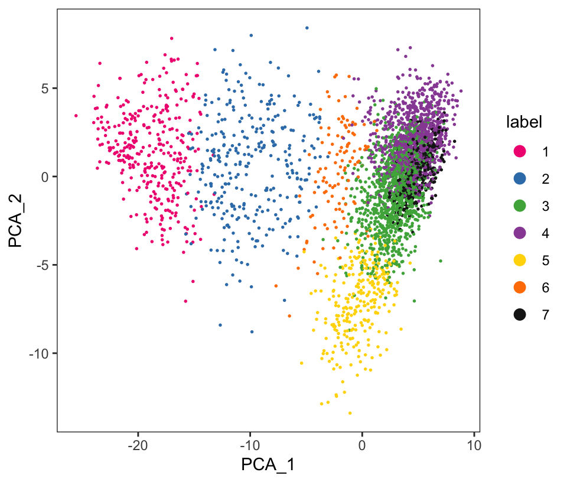
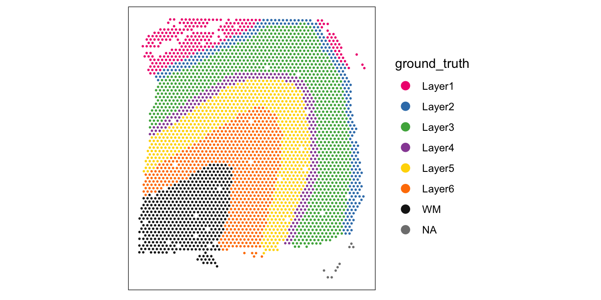
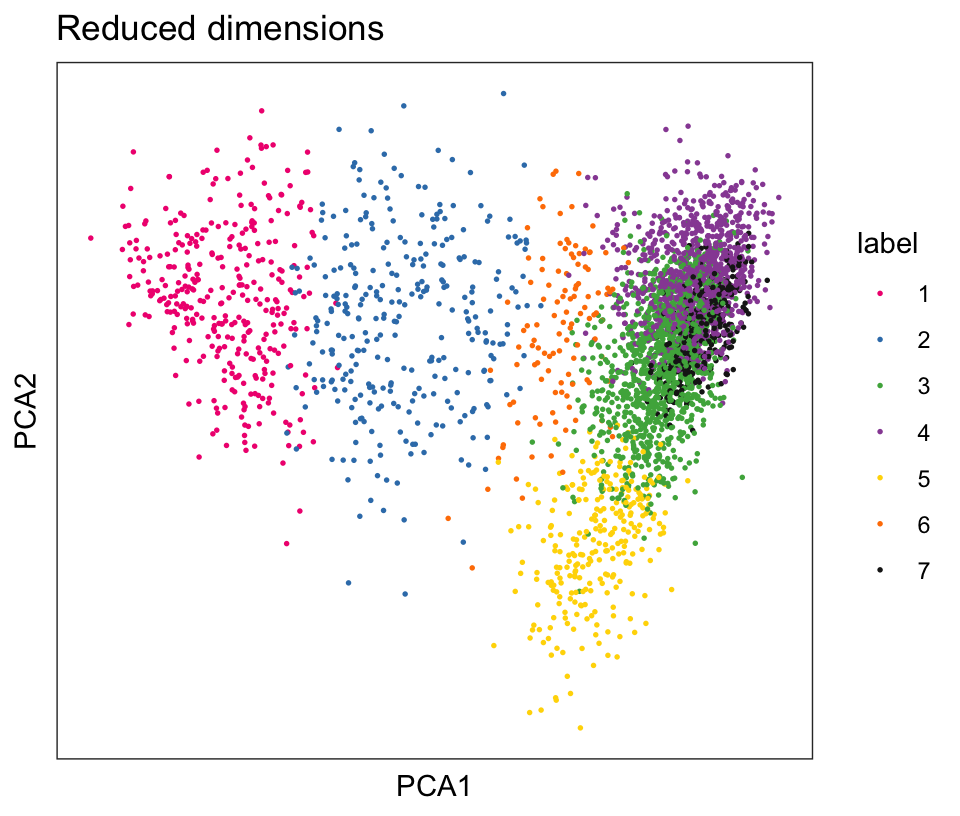

# LOAD DATA
library(SpatialExperiment)
library(STexampleData)
spe <- Visium_humanDLPFC()
# QUALITY CONTROL (QC)
library(scater)
# subset to keep only spots over tissue
spe <- spe[, colData(spe)$in_tissue == 1]
# identify mitochondrial genes
is_mito <- grepl("(^MT-)|(^mt-)", rowData(spe)$gene_name)
# calculate per-spot QC metrics
spe <- addPerCellQC(spe, subsets = list(mito = is_mito))
# select QC thresholds
qc_lib_size <- colData(spe)$sum < 600
qc_detected <- colData(spe)$detected < 400
qc_mito <- colData(spe)$subsets_mito_percent > 28
qc_cell_count <- colData(spe)$cell_count > 10
# combined set of discarded spots
discard <- qc_lib_size | qc_detected | qc_mito | qc_cell_count
colData(spe)$discard <- discard
# filter low-quality spots
spe <- spe[, !colData(spe)$discard]
# NORMALIZATION
library(scran)
# calculate logcounts using library size factors
spe <- logNormCounts(spe)10 Clustering
10.1 Overview
In ST data, we can apply clustering algorithms to identify ‘spatial domains’, which represent spatially defined regions consisting of relatively consistent gene expression profiles. For example, spatial domains may consist of regions containing cells from a single cell type or a consistent mixture of cell types.
Several alternative approaches exist for these analyses. For example, we can apply standard clustering algorithms from single-cell workflows to identify cell types without taking any spatial information into account, and then analyze the spatial distributions of these cell types. Alternatively, we can use spatially-aware clustering algorithms that directly take the spatial coordinates of the measurements into account. For larger datasets, there may also be important computational tradeoffs between the various approaches.
It is also important to keep in mind that when we use clustering to define cell types and/or states, these can be defined at various resolutions (or even on a continuum). The optimal number of clusters depends on the biological context – in particular, there is no “true” number of clusters, since this depends on the biological context (e.g. if we are comparing major cell populations vs. comparing rare subtypes), so the choice of the optimal number of clusters requires some judgment and biological interpretation.
Once we have identified spatial domains, these can then be further investigated in additional downstream analyses.
10.2 Previous steps
Code to run steps from the previous chapters to generate the SpatialExperiment object required for this chapter.
# note: store object for later
spe_full <- spe# FEATURE SELECTION
# remove mitochondrial genes
spe <- spe[!is_mito, ]
# fit mean-variance relationship
dec <- modelGeneVar(spe)
# select top HVGs
top_hvgs <- getTopHVGs(dec, prop = 0.1)
# DIMENSIONALITY REDUCTION
# compute PCA
set.seed(123)
spe <- runPCA(spe, subset_row = top_hvgs)
# compute UMAP on top 50 PCs
set.seed(123)
spe <- runUMAP(spe, dimred = "PCA")
# update column names
colnames(reducedDim(spe, "UMAP")) <- paste0("UMAP", 1:2)10.3 Non-spatial clustering
10.3.1 Clustering using HVGs
Here, we perform clustering by applying standard clustering methods developed for single-cell RNA sequencing data, using molecular features (gene expression) only. We apply graph-based clustering using the Walktrap method implemented in scran (Lun, McCarthy, and Marioni 2016), applied to the top 50 PCs calculated on the set of top HVGs.
In the context of spatial data, this is the same as applying clustering to identify cell types in single-cell data (although each spot may contain one or more cells, depending on the platform and tissue cell density), and means that we are assuming that biologically informative spatial distribution patterns of cell types can be detected from the molecular features (gene expression).
# graph-based clustering
set.seed(123)
k <- 10
g <- buildSNNGraph(spe, k = k, use.dimred = "PCA")
g_walk <- igraph::cluster_walktrap(g)
clus <- g_walk$membership
table(clus)clus
1 2 3 4 5 6 7
338 312 1146 978 274 116 360 # store cluster labels in column 'label' in colData
colLabels(spe) <- factor(clus)Visualize the clusters by plotting in (i) spatial (x-y) coordinates on the tissue slide, and (ii) reduced dimension space (PCA or UMAP). We use plotting functions from the ggspavis package.
For reference, we also display the ground truth (manually annotated) labels available for this dataset (in spatial coordinates).
From the visualizations, we can see that the clustering reproduces the known biological structure (cortical layers), although not perfectly. The clusters are also separated in UMAP space, but again not perfectly.
library(ggspavis)# plot clusters in spatial x-y coordinates
plotSpots(spe, annotate = "label",
palette = "libd_layer_colors")
# plot ground truth labels in spatial coordinates
plotSpots(spe, annotate = "ground_truth",
palette = "libd_layer_colors")
# plot clusters in PCA reduced dimensions
plotDimRed(spe, type = "PCA",
annotate = "label", palette = "libd_layer_colors")
# plot clusters in UMAP reduced dimensions
plotDimRed(spe, type = "UMAP",
annotate = "label", palette = "libd_layer_colors")
10.4 Spatially-aware clustering
The example above shows that non-spatial clustering can capture some spatial relationships in ST data, primarily if these are due to spatially distributed cell types and where the cell types can be identified from their gene expression profiles alone. However, this does not directly make use of the spatial information contained in the measurements.
In many ST datasets, we can uncover further structure by performing analyses that directly take spatial information into account. Below, we demonstrate examples of these types of analyses, which we refer to as ‘spatially-aware clustering’.
10.4.1 Clustering using SVGs
One way to perform spatially-aware clustering is to first perform spatially-aware feature selection to identify a set of top spatially variable genes (SVGs) (see Chapter 8) and then use the set of top SVGs as the input for clustering.
In this case, the spatial information is taken into account during the feature selection stage, where we select a set of top SVGs instead of top HVGs. For the clustering stage, we can use the same algorithms as for non-spatial clustering.
Here, we demonstrate an example using nnSVG (Weber et al. 2023) to select the set of top SVGs. Note that in this example, we run nnSVG using a small subset of the dataset for faster runtime. For a full analysis, the full dataset should be used (see Chapter 8 for more details).
library(nnSVG)# subsample spots for faster runtime in this example
# note: skip this step in full analysis
n <- 100
set.seed(123)
ix <- sample(seq_len(n), n)
spe_nnSVG <- spe_full[, ix] ## note: using full object
# filter low-expressed and mitochondrial genes
# using stringent filtering for faster runtime in this example
# note: use default filtering in full analysis
spe_nnSVG <- filter_genes(
spe_nnSVG, filter_genes_ncounts = 10, filter_genes_pcspots = 3
)Gene filtering: removing mitochondrial genesremoved 13 mitochondrial genesGene filtering: retaining genes with at least 10 counts in at least 3% (n = 3) of spatial locationsremoved 33353 out of 33525 genes due to low expression# re-calculate logcounts after filtering
spe_nnSVG <- logNormCounts(spe_nnSVG)# run nnSVG
set.seed(123)
spe_nnSVG <- nnSVG(spe_nnSVG)Now that we have run nnSVG, we can select at set of top SVGs (instead of HVGs), and use these as the input for the subsequent clustering steps.
# select top SVGs
# note: using small subset in this example
# use larger set (e.g. top 1000 genes) in full analysis
n_top <- 50
ix_top <- order(rowData(spe_nnSVG)$rank)[1:n]
top_svgs <- rowData(spe_nnSVG)[ix_top, "gene_id"]# dimensionality reduction
# compute PCA
# note: using small number of components in this example
# use larger number (e.g. ncomponents = 50) in full analysis
set.seed(123)
spe_nnSVG <- runPCA(spe_nnSVG, ncomponents = 10, subset_row = top_svgs)# graph-based clustering
set.seed(123)
k <- 10
g <- buildSNNGraph(spe_nnSVG, k = k, use.dimred = "PCA")
g_walk <- igraph::cluster_walktrap(g)
clus <- g_walk$membership
table(clus)clus
1 2 3 4 5
6 6 53 24 11 # store cluster labels in column 'label' in colData
colLabels(spe_nnSVG) <- factor(clus)10.4.2 Clustering using concatenated features
An alternative strategy is to perform clustering on a set of concatenated columns of non-spatial and spatial features. For example, we can concatenate columns of non-spatial molecular features (e.g. top PCs calculated on the set of top HVGs) and columns of spatial features (e.g. x and y coordinates). In this case, a tuning parameter to scale the relative value ranges of the columns controls the relative weight between the two data modalities. If the tuning parameter is chosen poorly, either the molecular or spatial features may dominate the clustering. An example of this strategy was used in Maynard et al. (2021).
10.4.3 Spatially-aware clustering algorithms
Alternatively, we can use a spatially-aware clustering algorithm, which directly uses the spatial coordinates of the measurements within the clustering algorithm. Various algorithms have been developed, which have different advantages and make different assumptions, for example identifying spatially compact or spatially connected clusters.
Examples of spatially-aware clustering algorithms include:
BayesSpace: available as an R package from Bioconductor and described by Zhao et al. (2021)
BANKSY: available as an R package from Bioconductor version 3.9 onwards and described by Singhal et al. (2024)
SpaGCN: available as a Python package from GitHub and described by Hu et al. (2021)
PRECAST: available as an R package from CRAN and described by Liu et al. (2023)